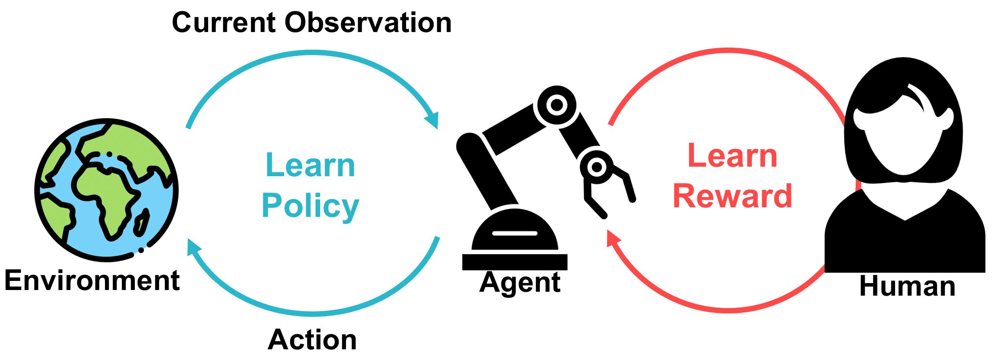
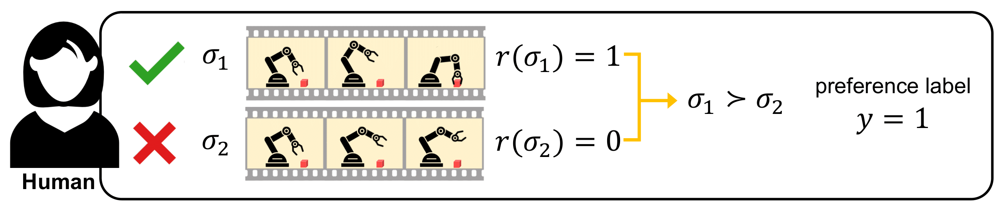
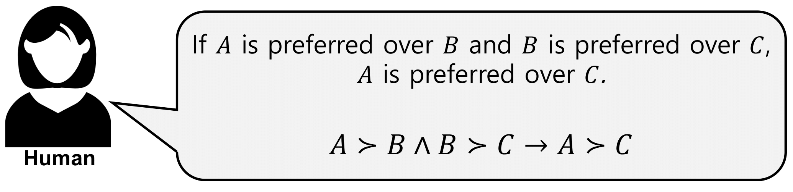
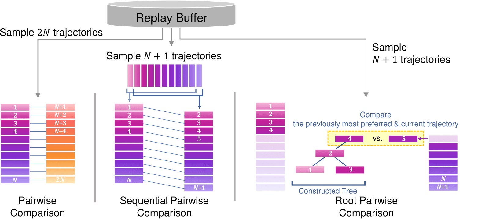
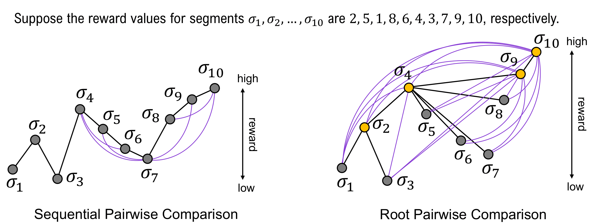
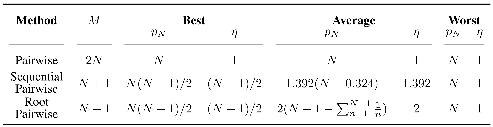
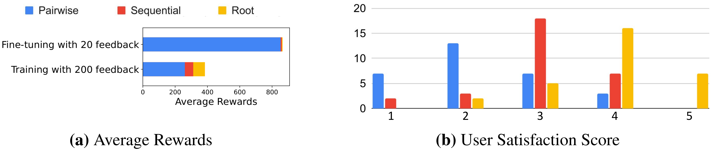

Reinforcement Learning from Human Feedback (RLHF)
Reinforcement learning from human feedback (RLHF) directly learns from human preferences without the need for a hand-crafted reward function.

A conventional way to learn a reward function in RLHF is pairwise comparison.

Using pairwise comparison, the agent queries a human to compare two different trajectories. The feedback efficiency is also fixed as a standardized level, 1.

SeqRank
We propose a novel RLHF framework called SeqRank. Our method uses sequential preference ranking to enhance the feedback efficiency and reduce human’s labeling effort.

The key idea of our approach is to utilize the preference relationships of the previous trajectory pairs. Bringing the nature of transitivity in human preferences, we can augment preference data.
Our method samples trajectories in a sequential manner by iteratively selecting a defender from the set of previously chosen trajectories K and a challenger from the set of unchosen trajectories U \ K. Specifically, we propose two trajectory comparison methods with different defender sampling strategies:
- Sequential Pairwise Comparison: defender = most recently sampled trajectory
- Root Pairwise Comparison: defender = previously most preferred trajectory
Sequential Pairwise Comparison
Sequential pairwise comparison selects the most recently sampled trajectory as the defender.

Root Pairwise Comparison
Root pairwise comparison selects the previously most preferred trajectory as the defender.

Both sequential and root pairwise comparison can augment additional preference data due to transitivity.

Toy Example
Suppose the reward values for segments σ_1, σ_2, …, σ_10 are 2, 5, 1, 8, 6, 4, 3, 7, 9, 10, respectively. Then, we can construct a graph for each trajectory comparison method.

Black lines indicate actual pairs that receive true preference labels from human feedback. Purple lines describe augmented labels for non-adjacent pairs.
Theoretical Analyses
We prove that sequential and root pairwise comparison show 39.2% and 100% higher average feedback efficiency compared to conventional pairwise comparison.

Trade-Off between Feedback Efficiency and Data Dependency
blahblah
Results
Simulation Experiments
We show that the overall performance in DMControl is in the order of root, sequential, and pairwise comparison.
DMControl - Quadruped Walk

In the example trajectories in the quadruped walk task, the agent trained using pairwise comparison fails to turn its body upside down.
DMControl - Walker Walk

In the example trajectories in the walker walk task, the agent trained using root pairwise comparison shows the fastest and most stable gait.
MetaWorld - Drawer Open - Scenario I

In the first scenario in the drawer open task, the agent trained using pairwise comparison fails to open the drawer.
MetaWorld - Drawer Open - Scenario II

In the second scenario in the drawer open task, all agents open the drawer, but the agents trained using pairwise and sequential pairwise comparison are unstable because their end effectors oscillate with a large and small amplitude, respectively.
MetaWorld - Window Open

In the example trajectories in the window open task, only the agent trained using root pairwise comparison succeeds in opening the window.
MetaWorld - Hammer

In the example trajectories in the hammer task, agents trained using sequential and root pairwise comparison succeed in driving a nail into the wooden box.
Real Human Feedback Experiments
We conduct experiments with real human feedback to compare the user stress level for each method. Each participant trained a cheetah to run as fast as it can.

Pairwise Comparison (Baseline)
Sequential Pairwise Comparison (Ours)
Root Pairwise Comparison (Ours)
Root pairwise comparison is the least burdensome for real human users while achieving the highest performance.
After the experiments end, the participants took a survey. Participants responed that the user satisfaction scores are 2.20 (pairwise), 3.00 (sequential), and 3.93 (root). The most significant preference criterion was the overall moved distance of the agent.

Real Robot Experiments - Block Placing
To demonstrate our method in real-world environments, we conduct a block placing task using a real UR-5 robot.